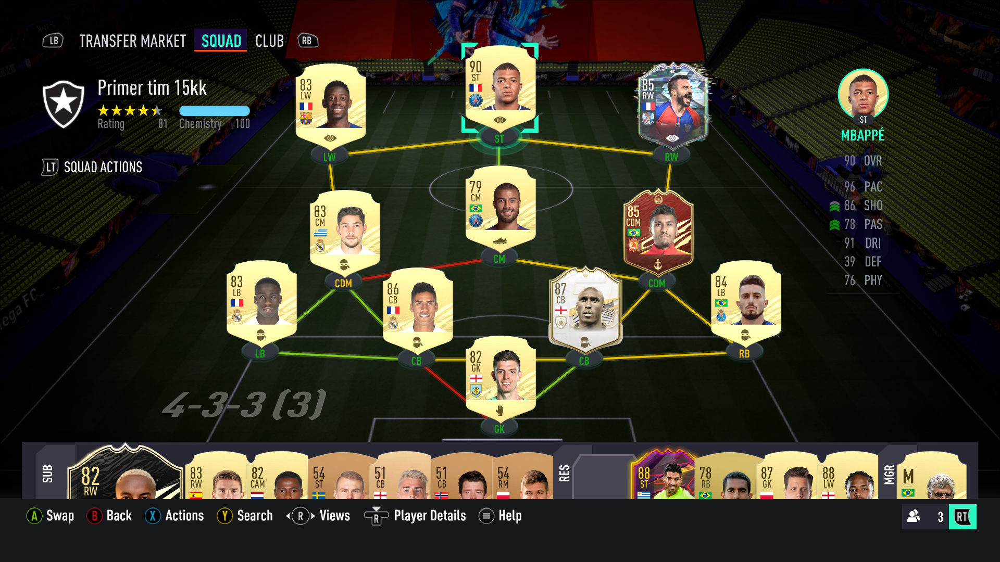

FUT je mod u fifi u kojem je cilj napraviti vas "dream" tim i sa njime pokoriti sve .Od necega treba poceti,iako ovaj tim nije ravan ni zonasu FK "TEK Sloga",ovo je vas pocetni tim na kojem treba da radite kako bi ste napravili tim koji ce vam doneti vas glavni cilj a to je sto vise pobeda.Na kraju svake utakmice dobijate oko 400 coinsa koje koristite za kupovinu igrača ili paketića.

Ovako izgleda tim koji ce vam doneti dodatnu pobedu a da bi ste dosli do njega treba vam dosta coinsa.Postoji dosta načina za zaradu coinsa. Dva najčesća načina su samim igranjem i "trading".
"Trading" je veoma jednostavna metoda gde Vi kupite igrača po nižoj ceni na transfer marketu pa ga prodate za nesto vise coinsa.Da ne dodje do prevelike količine coisa u igri EA je dodao takse od 5% na prodajnu cenu.Na primer ako prodate igrača za 10000 coinsa dobićete 9500 a 500 izima EA na taksi.
Na samom marketu se nalazi veliki broj raznih igrača.Svaki igrač ima svoju cenu i svoj cenovni rank.Da bi sprečili prodaju coinsa u stvarnom svetu Ea je dodao cenovne rankove.Na primem većina igrača ima rank od 200-10000 dok popularniji i bolji igrači veći.
Sad dolazimo do glavnog načina zarade para EA.To su čuveni paketići koje EA prodaje za coinse ili pointse ,koji se kupuju sa stvarnom valutom.U svakom paketiću se nalaze igrači.Pekove isto možete da dobijete igranjem same igre.